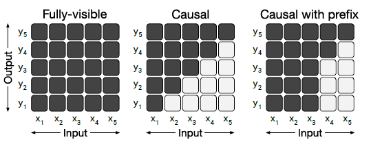
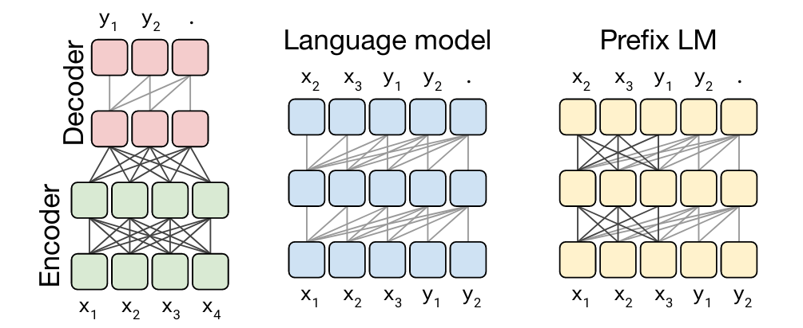

Pretrained Language Models#

Language Models#
Language models are models that can predict the next word in a sequence of words.
They are trained on large corpora of text.
They are used to generate text, to fill in missing words, to correct spelling, and to do many other things.
They are also used to initialize the weights of other models, such as neural machine translation models.
Contextualized Word Embeddings#
Contextualized word embeddings are word embeddings that are computed in the context of a sentence.
Word embeddings like Word2Vec and GloVe are static, meaning that they are computed without any context.
E.g., the word “bank” in “I went to the bank to deposit my check” is the same as the word “bank” in “The river bank was full of dead fish.”
Deep learning based word embeddings like ELMo and BERT are contextualized, meaning that they are computed in the context of a sentence.
Pretrained Language Models#
Pretrained language models are language models that have been trained on large corpora of text in a self-supervised manner.
Then, the weights of the model are saved and can be used to fine-tune other models for specific tasks. It is called transfer learning.
The power of pretrained language models is that they understand the generic linguistic structure of language.
Categories of Pretrained Language Models#
Pretrained language models can be categorized by their training objectives.
Standard language models are trained to predict the next word in a sequence of words.
Masked language models are trained to predict the missing words in a sequence of words.
Permutation language models are trained to predict workds in some random order.
PLMs can also be categorized by their architecture.
Encoder-only models predict the masked or corrupted tokens based on all other tokens in the sequence.
Decoder-only models predict the next token based on the previous tokens.
Encoder-decoder models generate output sequences based on input sequences.
Training Objectives#
Standard Autoregressive Language Modeling#
In autoregressive language modeling, the ideal language model \(p^*(w)\) is a probability distribution over all possible sequences of words \(w\):
where \(\theta\) are the model parameters and \(\hat{p}\) is the model’s prediction of the probability of the next word given the previous words.
The autoregressive language modeling approach uses the previous words to predict the next word.
LSTM or Bi-LSTM, an RNN based architecture before the transformer architecture, uses this approach.
This inherent sequential nature of the models does not understand the context of the sentence as a whole.
Correctly predicting the next word depends on the previous words.
As a sequence of words gets longer, the model becomes more difficult to predict the next word.
This nature of the model makes it difficult and slow to train.
Masked Language Modeling#
The main objective of the model is to predict the masked words, which are randomly masked in the input sequence.
This approach makes the model bidirectional in nature because the masked words are predicted based on the words before and after the masked words.
BERT (Bidirectional Encoder Representations from Transformers) is the most famous masked language model.
This approach only use the encoder part of the model.
Predicting the masked words is done independently of the other masked words in the sequence. This makes it easier to parallelize the training process.
However, this approach does not take into account the dependency between the masked words.
For example, in the sentence “I went to the [MASK] to deposit my [MASK]”, the model should predict “bank” for the first masked word and “check” for the second masked word. However, the model may predict “bank” for the first word and “luggage” for the second word because the model does not take into account the dependency between the masked words.
{kind=link}
Causal Masked Language Modeling#
Causal masked language modeling is also to predict the masked words in the input sequence.
However, unlike the masked language modeling, the model can only see the words before the masked word by the causal masking scheme.
Therefore, this approach is unidirectional in nature.
GPT (Generative Pre-Training) and its variants follow this approach.
This approach naturally takes into account the dependency between the masked words.
Because the model only uses the decoder part of the transformer architecture, it is also called decoder-only language model.
Permutation Language Modeling#
The major flaw of the masked language modeling approach is that it does not take into account the dependency between the masked words.
Permutation language modeling is to predict the tokens in a random order.
XLNet (Generalized Autoregressive Pretraining for Language Understanding) uses this approach. ([Yang et al., 2019])
Permutation language models learn the bidirectional dependency between all combinations of tokens in the sequence.
Transformer Architecture and PLMs#
The transformer architecture consists of two parts: the encoder and the decoder. The encoder is used to encode the input sequence into a vector representation. The decoder is used to decode the vector representation into the output sequence.
We can classify PLMs into three categories based on the usage of the encoder and the decoder:
Encoder-only PLMs (e.g. BERT, RoBERTa, DistilBERT, ALBERT, ELECTRA, etc.) are used to encode the input sequence into a vector representation. The decoder is not used. The vector representation is used as the input to the downstream task. For example, the vector representation can be used as the input to a classifier to perform text classification.
Decoder-only PLMs (e.g. GPT-2, CTRL, etc.) only use the decoder to generate the output sequence. The encoder is not used. The decoder is trained to predict the next word in the sequence of words.
Encoder-decoder PLMs (e.g. T5, BART, MASS, etc.) use both the encoder and the decoder. The encoder is used to encode the input sequence into a vector representation. The decoder is used to generate the output sequence.

GPT Family#
GPT (Generative Pre-Training) is the first decoder-only PLM.
GPT uses the uni-directional context to predict the next word.
Loss function is defined as:
\[ \mathcal{L} = -\frac{1}{N} \sum_{i=1}^N \log \hat{p}_{\theta}(w_i \mid w_1, \ldots, w_{i-1}) \]Main usage of GPT is to generate text.
BERT#
BERT (Bidirectional Encoder Representations from Transformers) is the first encoder-only PLM.
BERT uses two objectives to train the model: masked language modeling and next sentence prediction.
Masked language modeling is to predict the masked words in the input sequence.
{kind=link}
Next sentence prediction is to predict whether the second sentence is the next sentence of the first sentence.

RoBERTa#
RoBERTa (Robustly Optimized BERT Pretraining Approach) is a variant of BERT.
Modifications to BERT:
Dynamic masking is used instead of static masking.
Byte-level BPE is used instead of WordPiece.
Training with longer sequences is used.
Training with more data is used.
Training with more epochs is used.
No next sentence prediction is used.
{kind=link}
ALBERT#
ALBERT (A Lite BERT) is a variant of BERT.
Modifications to BERT:
Factorized embedding parameterization: use lower-dimensional parameter matrices to represent the word embeddings and the token type embeddings.
Cross-layer parameter sharing: share the parameters across different layers.
Inter-sentence coherence objective: use the sentence order prediction task to train the model.

ELECTRA#
ELECTRA (ELECtric pre-training of Language Representations) is a variant of BERT.
ELECTRA uses the replaced token detection task to train the model.
The generator is used to generate the masked words, and the discriminator is trained with a binary classification task to distinguish the generated words from the original words.

ELECTRA shows the better performance than BERT on the GLUE benchmark.

XLNet#
XLNet (Generalized Autoregressive Pretraining for Language Understanding) is the first permutation language model.
XLNet uses the permutation language modeling to train the model.
It randomly permutes the input sequence and then predicts the target word using the remaining words in the sequence.
Bidirectional dependency between all combinations of tokens in the sequence is learned.

XLNet utilizes the Transformer-XL architecture to train the model.
The Transformer-XL architecture uses the relative positional encoding to encode the position of the tokens in the sequence.
It uses the segment-level recurrence to encode the dependency between the tokens in the sequence.
T5#
T5: Text-to-Text Transfer Transformer
We have the separate lecture on T5. Please refer to the lecture on T5 for more details.

BART#
BART: Denoising Sequence-to-Sequence Pre-training for Natural Language Generation, Translation, and Comprehension
Pre-training objective: apply the denoising objective to the input sequence to generate the output sequence (i.e. masks, deletions, permutations, and insertions).
Fine-tuning
For classification tasks, feed the same input sequence to the encoder and the decoder and use the final decoder token for classification.
For generation tasks, feed the input sequence to the encoder and use the decoder to generate the output sequence.

Finetuning of PLMs#
Finetuning of PLMs is to fine-tune the pre-trained PLMs on the downstream tasks.
We add task-specific layers (e.g. classification layer) on top of the pre-trained PLMs to perform the downstream tasks.
Task-specific layers are initialized randomly and then jointly trained with the pre-trained PLMs with task-specific training data.

References#
Radford, A., Narasimhan, K., Salimans, T., & Sutskever, I. (2018). Improving language understanding by generative pre-training. OpenAI blog
Radford, A., Wu, J., Child, R., Luan, D., Amodei, D., & Sutskever, I. (2019). Language models are unsupervised multitask learners. OpenAI blog, 1(8), 9.
Devlin, Jacob, et al. “Bert: Pre-training of deep bidirectional transformers for language understanding.” arXiv preprint arXiv:1810.04805 (2018).
Liu, Y., Yang, Z., Dyer, C., He, X., Smola, A., & Hovy, E. (2019). RoBERTa: A robustly optimized BERT pretraining approach. arXiv preprint arXiv:1907.11692.
Lan, Z., Chen, M., Yeyati, E., He, X., & Smola, A. (2019). ALBERT: A lite BERT for self-supervised learning of language representations. arXiv preprint arXiv:1909.11942.
Clark, K., Luong, M. T., Le, Q. V., & Manning, C. D. (2020). ELECTRA: Pre-training text encoders as discriminators rather than generators. ICLR.
Yang, Z., Dai, Z., Yang, Y., Carbonell, J., Salakhutdinov, R., & Le, Q. V. (2019). XLNet: Generalized Autoregressive Pretraining for Language Understanding. NeurIPS.
affel, C., Shazeer, N., Roberts, A., Lee, K., Narang, S., Matena, M., … & Liu, P. J. (2020). Exploring the limits of transfer learning with a unified text-to-text transformer. JMLR.
Lewis, M., Liu, Y., Goyal, N., Ontanon, S., Ba, J., & Zettlemoyer, L. (2020). BART: Denoising sequence-to-sequence pre-training for natural language generation, translation, and comprehension. arXiv preprint arXiv:1910.13461.